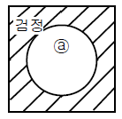
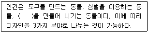
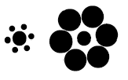

시각디자인산업기사 (2011-10-02 기출문제)
1과목: 색채학
1. 먼셀 표색계의 색표기 "5R 4.14"에서 채도는?
- 4
- 5
- 5R
- 14
(정답률: 85%)

2. 명소시에서 암소시로 이행할 때 색의 감지에 관한 푸르킨예현상을 적용한 비상구 표시로 알맞은 색은?
- 황색
- 적색
- 주황색
- 녹색
(정답률: 100%)
3. 같은 물체의 색이라도 조명에 따라 색이 달라져 보이는 현상은?
- 작열현상
- 조건등색
- 연색성
- 표준광
(정답률: 58%)
4. 다음 색 중 특성이 다른 것은?
- White
- Light gray
- Red purple
- Black
(정답률: 86%)
5. 색채조화 이론에서 보색조화와 유사색조화 이론과 관계있는 사람은?
- 슈브뢸(M.E.Chevreul)
- 베졸드 (Bezold)
- 브뤼케(Brucke)
- 럼포드(Rumford)
(정답률: 74%)
6. 색상에 따라 동일한 면적이더라도 그 크기가 달라 보이게 된다. 다음의 4가지 색을 함께 사용할 경우 각 색이 모두 동일한 면적감을 느끼게 하기 위해 가장 작은 비율로 사용해야 할 색은?
- 주황
- 빨강
- 보라
- 노랑
(정답률: 알수없음)
7. 먼셀(Munsell)표색계에서 채도에 대한 설명 중 옳은 것은?
- 채도 단계는 0 ~ 10 으로 되어 있다.
- 청록색의 채도는 14이다.
- 채도단계는 무채색을 0 으로 하여 순색까지의 단계로 이루어져 있다.
- 채도 1 ~ 3 까지를 고채도라고 한다.
(정답률: 85%)
8. 주위색의 영향으로 인접색에 가깝게 느껴지는 현상은?
- 인접현상
- 동화현상
- 보색현상
- 주목현상
(정답률: 90%)
9. 다음 중 제품 색채설계의 조사 연구계획을 세울 때 고려 할 사항으로 거리가 먼 것은?
- 경쟁사 제품의 색채 사용상황
- 제품을 두는 환경의 색채
- 소비자들의 의견 청취
- 제품의 내장재료
(정답률: 80%)
10. 가시광선에 대한 설명 중 옳은 것은?
- 380nm ~ 780nm 범위의 파장이다.
- 380nm 이하의 파장이다.
- 자외선이다.
- X-선이다.
(정답률: 84%)
11. 다음 중 '관용색 - 대응하는 계통색 이름 - 색의 3속성에 의한 표시'의 연결이 틀린 것은? (단, KS 기준)
- 벚꽃색 - 흰 분홍 - 2.5R 9/2
- 빨강 - 빨강 - 7.5R 4/14
- 벽돌색 - 탁한 적갈색 - 10R 3/6
- 상아색 - 노랑 하양 - 5Y 9/2
(정답률: 84%)
12. 무대 조명에서 관찰될 수 있는 색의 혼합은?
- 감산혼합
- 가산혼합
- 병치혼합
- 회전혼합
(정답률: 90%)
13. 눈의 피로를 회복시키며 차가움과 심원, 냉정, 명상 등을 연상시키는 색은?
- 백색
- 파랑
- 마젠타
- 밝은 청록
(정답률: 79%)
14. 오스트발트 색채조화론에 의한 조화법칙 중 틀린 것은?
- 색상이 동일하고 색의 기호가 다르면 두 색은 조화하지 않는다. (예 : 5ge - 5ne)
- 색상이 달라도 색의 기호가 동일한 두 색은 조화한다. (예 : 5ne - 8ne)
- 색의 기호 중 앞의 문자가 동일한 두 색은 조화한다. (예 : ga - ge)
- 색의 기호 중 앞의 문자와 뒤의 문자가 같은 색은 조화한다. (예 : la - pl)
(정답률: 60%)
15. 오스트발트 표색계에서 완전색(순색)을 표시하는 기호는?
- A
- B
- C
- W
(정답률: 알수없음)
16. 색채조화에 관한 다음 설명 중 틀린 것은?
- 색조가 강한 색 일수록 조화에 민감하므로 배색이 어렵다.
- 대비조화는 변화감을 유사조화는 통일감을 가져 온다.
- 명도, 채도가 비슷한 색끼리 배색할 경우 그 경계에 무채색의 분리 띠를 넣으면 애매한 관계가 없어진다.
- 색채조화는 주로 색상에 관계되고 명도, 채도는 크게 영향을 주지 않는다.
(정답률: 100%)
17. 백광이 스펙트럼으로 분광되었을 때 가장 짧은 파장의 색은?
- 노랑
- 보라
- 녹색
- 빨강
(정답률: 92%)
18. 다음 감산혼합 중 틀린 것은?
- 자주(M) + 노랑(Y) = 귤색(O)
- 노랑(Y) + 청록(C) = 녹색(G)
- 청록(C) + 자주(M) = 파랑(B)
- 노랑(Y) + 자주(M) + 청록(C) = 검정(BL)
(정답률: 75%)
19. 명시도가 높은 배색을 하기 위해서 바탕색이 검정인 ⓐ의 색으로 다음 중 가장 적합한 것은?

- 연두
- 녹색
- 빨강
- 자주
(정답률: 80%)
20. 색채의 감정과 관련된 대표적인 색의 속성을 연결한 것으로 거리가 먼 것은?
- 경연감 - 채도
- 중량감 - 명도
- 온도감 - 채도
- 거리감 - 명도
(정답률: 50%)
2과목: 인쇄 및 사진기법
21. 다음 중 물에 대한 용해도가 크기 때문에 은염감광제로 사용할 수 없는 것은?
- 브롬화은
- 요드화은
- 플루오르화은
- 염화은
(정답률: 47%)
22. 다음 광선 중 인물의 입체적 표현에 가장 적합한 광선은?
- 역광
- 반역광
- 사광
- 정면광
(정답률: 70%)
23. 필름의 콘트라스트(contrast)에서 중간계조가 거의 생략되고희고 검은 부분만으로 이루어진 사진으로 만들어지는 필름의 종류는?
- 연조
- 중간조
- 경조
- 다계조
(정답률: 59%)
24. 인쇄 용지 A라고도 하며 서적 본문, 일반 인쇄물, 포스터, 상업 인쇄물 등에 가장 많이 사용되는 용지는?
- 갱지
- 크라프트지
- 상질지
- 신문용지
(정답률: 77%)
25. 인쇄의 판식(볼록판, 오목판, 평판, 공판)은 무엇으로 구분되어 지는가?
- 사용하는 판의 성분
- 잉크를 수용하는 화선부의 형태
- 사용하는 피인쇄체의 종류
- 사용하는 기술자에 따라
(정답률: 92%)
26. 제책을 할 때 책등을 만드는 방식이 아닌 것은?
- 타이트백
- 홀로백
- 플렉시블백
- 실크백
(정답률: 알수없음)
27. 가로획이 가늘고 세로획이 굵은 도안 서체로서 가독성, 미려성, 조화성 등의 요소를 가장 충족시킨 서체는?
- 명조체
- 예서체
- 해서체
- 고딕체
(정답률: 80%)
28. 다음 중 버닝(Burning)에 대한 설명으로 옳은 것은?
- 기본 노출 후 사진의 일부에 빛을 더 주어 어둡게 만드는 것이다.
- 기본 노출 중에 빛의 일부를 가려서 사진의 일부분을 밝게 하는 것이다.
- 물체는 확대 렌즈의 아래에 대고 밝게 하고자 하는 부분에 빛이 닿지 않도록 하는 것이다.
- 확대 렌즈에 물체를 가까이 할수록 그림자는 작아지고 빛이 확산 및 축소된다.
(정답률: 75%)
29. 컬러필름 현상시 미노출된 할로겐호은염(AgX)의 제거와 동시에 탈은(desilverizing)을 하는 과정은?
- 현상, 발색
- 표백, 정착
- 수세, 건조
- 발색, 수세
(정답률: 71%)
30. 앙각(low angle)촬영으로 기대되는 효과와 가장 거리가 먼 것은?
- 당당함
- 위대함
- 늠름함
- 평온함
(정답률: 100%)
31. 다음 중 커플러(발색제)의 종류가 아닌 것은?
- Cyan 커플러
- Magenta 커플러
- Yellow 커플러
- Blue 커플러
(정답률: 알수없음)
32. 잉크가 화선부를 통과하여 피인쇄체에 인쇄되고 비화선부는 통과하지 않도록 하여 인쇄하는 방식은?
- 볼록판 인쇄
- 평판 인쇄
- 오목판 인쇄
- 공판 인쇄
(정답률: 40%)
33. 가시광선 전 영역에 감광 파장역을 갖는 분광증감 유제의 감색성은?
- 레귤러(regular)
- 오르토크로매틱(orthochromatic)
- 팬크로매틱(panchromatic)
- 적외형(infra red)
(정답률: 73%)
34. 휘발성 용제에 수지와 같은 피막형성 물질을 용해한 비이클과 안료로 만든 그라비어 인쇄 앙크의 가장 일반적인 건조 형식은?
- 산화중합 건조형
- 침투 건조형
- 증발 건조형
- 냉각 건조형
(정답률: 53%)
35. 적정 노광의 조리개수치와 셔터스피드가 f/11, 1/125일 때, 이와 같은 광량을 나타내는 조합으로 틀린 것은?
- f/8, f/250
- f/5.6, 1/500
- f/16, 1/60
- f/4, 1/500
(정답률: 알수없음)
36. 피사계 심도를 결정하는 요인으로 가장 거리가 먼 것은?
- 조리개값
- 초점거리
- 촬영거리
- 셔터속도
(정답률: 알수없음)
37. 현상 작용이 급격히 이루어지는 것을 막고, 포그(fog)가 발생되지 않도록 사용하는 현상 조제약은?
- 촉진제
- 보항제
- 현상주약
- 억제제
(정답률: 67%)
38. 제책에 있어서 속장과 겉장을 연결하는 부분이며 속장의 내구력을 좌우하는 중요한 작업은?
- 접기
- 면지 붙이기
- 쪽 맞추기
- 등굳힘
(정답률: 71%)
39. 의상소개, 메이크업, 헤어스타일, 액세서리 등을 소개할 목적으로 모델을 이용하여 촬영한 사진은?
- 다큐멘터리사진
- 스냅사진
- 패션사진
- 기념사진
(정답률: 알수없음)
40. 더블(double)에 대한 설명으로 틀린 것은?
- 단색 더블링과 오프셋 더블링이 있다.
- 그리퍼 및 그리퍼대가 마모되면 발생한다.
- 종이의 컬과는 상관없다.
- 앞 맞추게(front lay)의 불량으로 발생한다.
(정답률: 알수없음)
3과목: 시각디자인론
41. 19세기 후반 생활공예에서 품질과 미의 향상을 추구한 윌리엄 모리스(W,Morris)의 디자인 개혁운동은?
- 산업화 운동
- 장식화 운동
- 예술생산 운동
- 미술공예 운동
(정답률: 65%)
42. 다음 내용 중 유겐트스틸과 관계없는 것은?
- 독일에서의 아르누보 운동의 양식과 경향에 대한 호칭이다.
- 1896년 뮌헨에서 발행된 미술잡지 유겐트에서 유래된 말이다.
- 아르누보나 분리파와 비슷한 시기의 활동이다.
- 기능을 중시하는 모던디자인 운동의 출발점이라고 할 수 있다.
(정답률: 72%)
43. 다음 ( )안에 알맞은 것은?

- 생활
- 건축
- 기호
- 환경
(정답률: 67%)
44. 알베르트의 회화론에서 설명하는 디자인 법칙은?
- 원근법
- 작도법
- 반복법
- 평행법
(정답률: 80%)
45. 광고에서 Feed Back과 가장 관계가 없는 것은?
- 효과분석을 뜻한다.
- 공신력, 도달율을 뜻한다.
- 구매효과 즉 판매율을 뜻한다.
- 구매행동을 뜻한다.
(정답률: 73%)
46. 다음 아이디어를 시각회하는 과정 중 제일 먼저 선행되는 작업은?
- Mechanical Art
- Rough Sketch
- Comprehensive
- Thumbnail
(정답률: 50%)
47. 신제품을 위한 시각적 요소 및 광고, 홍보 이벤트 등 이미지 통합을 위한 디자인 전략은?
- MP(Master Plan)
- CI(Corporate Identity)
- UI(User Interface)
- BI(Brand Identity)
(정답률: 50%)
48. 다음 그림에서 좌측과 우측 그림의 중앙에 있는 원의 실제 크기는 동일하지만 크기가 다르게 보이는 것은 어떤 착시 효과인가?

- 분할의 착시
- 면적과 크기의 착시
- 상방거리 과대시
- 수직, 수평의 착시
(정답률: 93%)
49. 바우하우스와 관련이 없는 인물은?
- 클레
- 칸딘스킨
- 모홀리 나기
- 뮤사
(정답률: 67%)
50. 속도의 미를 추구하여 움직임을 표현하기 위해 중첩, 재현, 정지 등의 혼합된 표현을 추구한 것은?
- 미래주의
- 표현주의
- 구성주의
- 입체주의
(정답률: 50%)
51. 1919년에 개교하여 교육운동, 조형운동, 공방운동 등 다양한 면을 보였지만 1933년에 나치에 의해 폐쇄된 디자인 학교는?
- 바우하우스
- 울름조형대학
- 도무스
- 아트센터
(정답률: 74%)
52. 평면 도법의 선에 관한 설명 중 틀린 것은?
- 모양에 따른 선의 종류에는 실선, 파선, 쇄선이 있다.
- 치수선, 지시선 등에는 쇄선을 사용한다.
- 보이지 않는 부분의 모양을 표시할 때는 파선을 사용한다.
- 길고 짧은 길이로 반복되게 그어진 선을 일점쇄선이라 한다.
(정답률: 69%)
53. 제품을 판매하기 위한 마케팅 전략계획의 기본인 STP 3단계 전략에 해당되지 않는 것은?
- 시장세분화
- 디자인컨셉
- 목표시장의 선정
- 포지셔닝
(정답률: 78%)
54. 회전 단면도(Revolved Section)의 설명으로 틀린 것은?
- 처음과 끝, 굴곡 부분에 기호를 붙여 단면도 쪽에 기입한다.
- 절단선의 연장선상에 단면을 그린다.
- 물체를 자르지 않고 직접 조형 내에 겹쳐서 단면을 그린다.
- 절단할 곳의 전호를 끊어서 그 사이에 단면을 그린다.
(정답률: 알수없음)
55. 미국 산업디자인의 발전계기로 볼 수 없는 내용은?
- 세계 2차 대전 전후 바우하우스의 지도적인 인물들이 미국으로 이주
- 윌리엄 모리스의 기계부정 운동에 대한 반전운동
- 1920년대 미국의 대공황과 그로 인한 디자인의 필요성
- 바우하우스의 이념이 미국이라는 광대한 지역에서 꽃을 피우게 됨
(정답률: 알수없음)
56. 독일공작연맹(DMB)에서 추구한 디자인의 방향은?
- 생활조형의 양질화
- 색상의 다양성
- 전통적인 예술성
- 곡석적인 장식성
(정답률: 70%)
57. 면적과 길이의 관계 또는 모든 사물의 상대적인 크기로 조화의 근본이 되는 것은?
- 비례
- 대칭
- 반복
- 대비
(정답률: 94%)
58. 인간이 발견한 가장 아름다운 분할이라는 황금분할은?
- 1 : 1.618
- 1 : 1
- 1 : 1.414
- 1 : 1.5
(정답률: 94%)
59. 포장디자인, 옥외광고, 무대디자인,홀로그래픽 등의 디자인분야는?
- 평면디자인
- 환경디자인
- 준입체디자인
- 그래픽디자인
(정답률: 69%)
60. 형태의 인지에 있어 게슈탈트(Gestalt) 학파가 제창한 게슈탈트 요인에 해당되지 않는 것은?
- 근접의 요인 : 거리의 차이에 의해 가까운 것끼리 모아지기 쉽다.
- 유사의 요인 : 유사한 형태나 색채끼리 모아지기 쉽다.
- 공동운명의 요인 : 움직임이나 변화하는 모양에 공통점이 있을 때 인지하기 쉽다.
- 공간의요인 : 동일공간에 있는 요소는 단순해야 쉽게 인지한다.
(정답률: 65%)
4과목: 시각디자인실무 이론
61. 소비자를 집단별로 구분하는 시장 세분화에는 여러 가지 방법이 있는데 그 중 인구학적 특성별 세분화는?
- 지역, 도시크기, 인구밀도, 기후별
- 개성, 라이프스타일, 가치관
- 문화, 종교, 종속, 사회계층, 가족생활
- 연령, 성별, 수입별, 직업별, 교육수준별
(정답률: 86%)
62. 기계, 기구, 수송기관 등을 세밀하게 그리는 일러스트레이션은?
- 테크니컬 일러스트레이션
- 추상적 일러스트레이션
- 반 구상적 일러스트레이션
- 초현실적 일러스트레이션
(정답률: 95%)
63. 그래픽 파일 포맷의 하나인 GIF(Graphics interchange Format)에 대한 설명으로 틀린 것은?
- JPEG와 함께 월드 와이드웹에서 지원되는 그래픽 파일 형식 중의 하나이다.
- GIF는 그래픽 이미지 압축에 적합한 포맷이다.
- GIF에서는 웹 제작을 도와주기 위해 투명 색상을 지정할 수 있도록 하고 있다.
- GIF에서는 24비트 컬러만을 사용하므로 팔레트라는 개념을 적용할 수 없다.
(정답률: 91%)
64. TV광고 제작의 기본이 되는 것으로 영상(VIDEO)의 흐름을 설명하기 위한 광고주 제시용 시안을 무엇이라 하는가?
- 마스터 테잎
- 스토리 보드
- 드라프트
- 텔레시네
(정답률: 93%)
65. 구매결정과정에서 구매여부, 구매하는 대상, 방법, 시기, 장소 등의 일부 또는 전부를 결정하는 자는?
- 발안자(initiator)
- 창조자(creator)
- 결정자(decider)
- 구매자(buyer)
(정답률: 89%)
66. 신제품에 대한 소비자의 반응을 알아보기 위해 한 쌍의 반대 형용사를 양극에 놓고 두 대상의 위치를 동일한 의미 공간 내에서 두 형용사에로의 편중 정도를 알아보고 다차원의 공간으로 평가하는 조사 방법은?
- 평가 스케일(evaluation scale)
- 의미분별 척도법(semantic differential scale)
- 순위 차트(ranking chart)
- 평가 매트릭스(evaluation matrix)
(정답률: 69%)
67. 편집디자인의 요소를 잘 나열한 것은?
- 플래닝, 슈퍼그래픽, 포토그래피와 일러스트레이션, 인쇄보더라인
- 플래닝, 타이포그래피, 텍스타일, 레이아웃, 레터링
- 플래닝, 타이포그래픽, 포토그개피와 일러스트레이션, 레이아웃, 인쇄
- 플래닝, 타이포그래픽, 디스플레이, 레이아웃, 아이디어스케치
(정답률: 82%)
68. 광고 표현을 목적으로 옥외에 설치된 구축물로 사방에서 볼 수 있도록 높은 탑의 형태를 취하는 광고는?
- 에드벌룬
- 네온사인
- 벽면광고
- 광고탑
(정답률: 91%)
69. 신문광고의 헤드라인에 관한 설명 중 틀린 것은?
- 광고 컨셉이 극적이고 긴장감 있게 표현되어야 한다.
- 독자의 주목을 바디카피로 연결할 수 있어야 한다.
- 사진이나 일러스트레이션과 유기적 연광성을 가져야 한다.
- 내용을 자세하고 구체적으로 전달해야 한다.
(정답률: 92%)
70. 좋은 심벌마크의 조건이 아닌 것은?
- 적극적 연상이 가능할 것
- 정적 형태보다는 동적인 형태일 것
- 지속성보다는 유행에 따를 것
- 심미성과 조형성을 갖출 것
(정답률: 91%)
71. 웹에서 가장 많이 사용되는 이미지 파일의 형식은?
- PNG
- JPEG
- GIF
- BMP
(정답률: 알수없음)
72. 브랜드 연상 이미지와 거리가 먼 것은?
- 제품속성
- 유명인 모델
- 특정한 심벌
- 광교규격
(정답률: 80%)
73. 마케팅 믹스(Marketing Mix)의 4대 구성요소가 아닌 것은?
- 제품(product)
- 가격(price)
- 영향력(power)
- 유통(place)
(정답률: 79%)
74. 다음 중 SP(Sales Promotion)물을 뜻하는 것은?
- CIP
- RGB
- POP
- CTS
(정답률: 알수없음)
75. 신제품 개발의 의의로서 거리가 먼 것은?
- 기업체의 안정과 발전을 촉진
- 시장구조 변화에 대한 적응력 제공
- 제품의 수명주기 및 이익주기에 대한 대응
- 회사 내 구성원의 활력소로서의 기능 충족
(정답률: 95%)
76. 사회, 정치, 풍자나 일상생활의 유머, 넌센스 등을 소재로한 생략된 기법으로 표현되는 풍자화 또는 만화를 일컫는 말은?
- 카툰(cartoon)
- 미니멀 아트(minimal art)
- 모노크롬(monochrome)
- 아이캣쳐(eye catcher)
(정답률: 알수없음)
77. TV광고의 종류 중 프로그램과 프로그램의 중간에 삽입되는 광고를 뜻하며, 일정기간을 정한 집중광고에 효과적인 것은?
- 블록(Block) 광고
- 스팟(Spot) 광고
- 네트워크(Network) 광고
- 프로그램(Program) 광고
(정답률: 91%)
78. 커뮤니케이션(Communication)의 기능 중 지시적인 기능을 가지는 것은?
- 포스터, 다이렉트메일
- 심볼, 마크, 패턴
- 사진, 회화, 영화
- 신호, 부호, 기호
(정답률: 알수없음)
79. 신문, 잡지, 라디오, TV를 매체로 하는 대량 공격적인 광고와는 달리 광고물을 특정한 개인이나 단체의 예상고객에게 직접 우편으로 보내어 판매성과를 거두려는 광고 방법은?
- 엽서(card)
- 노벨티(novelty)
- 블로터(blotter)
- 다이렉트 메일(DM)
(정답률: 89%)
80. 어떤 도형을 보고 난 후 인간의 기억은 시간의 흐름에 따라 점차 약화되므로 원도형의 재생이 불가능하다. 따라서 재생되는 도형은 다양한 변화를 보여주는데 재생에 따른 변화를 가장 옳게 설명한 것은?
- 도형이 갖고 있는 특징만 두드러지게 재생된다.
- 시간의 경과에 따라 왜곡이 심하지 않다.
- 재생의 과정에서 익숙한 사물과는 거리가 먼 도형으로 변해간다.
- 기억되는 것은 도형의 형태 그 자체이다.
(정답률: 70%)